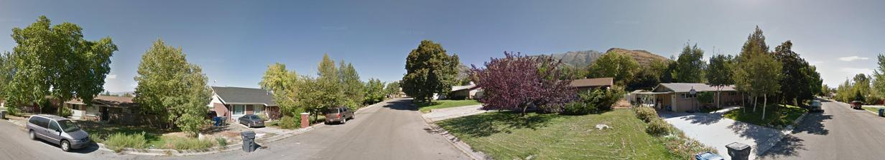
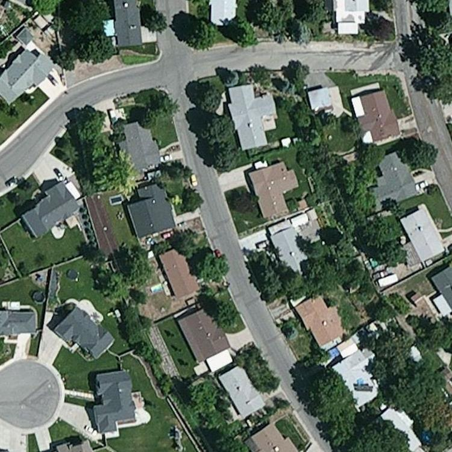
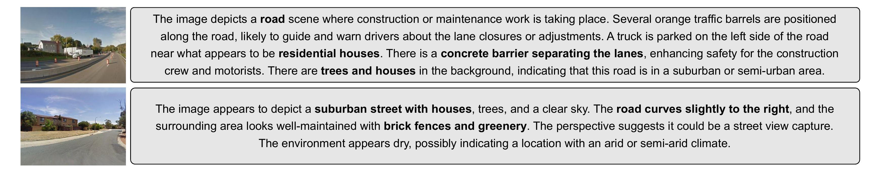

GAIA @ ECCV 2026
Language guides
where to look.
A two-stage framework for cross-view geolocalization that retrieves globally, then votes locally—matching a randomly oriented 90° ground view to its satellite location.
QUERY / 90° FOV

random crop

RANK01
SATELLITE / REGION VOTE
01 The challenge
A small view.
A world of ambiguity.
Cross-view geolocalization is already difficult: street-level and overhead images share little direct appearance. Random limited-FoV queries remove even more context—and offer no reliable orientation prior.
LG-Align uses language as a viewpoint-invariant bridge, then searches for the local satellite region that best supports the combined visual and semantic evidence.
02 The method
Retrieve the world.
Inspect the neighborhood.
Heavy encoders remain frozen. Lightweight Q-Former modules learn how to fuse modalities and identify discriminative satellite regions.

01
Global retrieval
Find the candidates
GroundDINOv3 tokens
LanguageFLAN-T5 tokens
→
Global Q-Former32 learned queries
↔
Satelliteglobal embedding
Visual and language tokens are fused into a compact query embedding and trained against the full satellite gallery with symmetric InfoNCE.
02
Local re-ranking
Vote for the region
Top-200hard candidates
→
Local Q-Formerquery tokens
→
Voting Q-Former3 × 3 region pool
→
Scorefused re-rank
Cross-attention becomes a spatial vote map. Sharp local evidence raises a candidate; diffuse responses push it down the ranking.

03 Language as context
Meaning survives
the viewpoint shift.
Descriptions capture roads, buildings, vegetation, vehicles, and spatial layout—signals that remain meaningful even when pixels look radically different from above.
“The road curves slightly to the right… brick fences and greenery.”
04 Qualitative analysis
Language moves the match
toward the right place.
Each example compares image-only retrieval with retrieval guided by both the limited-FoV ground image and its description. Green borders mark the correct satellite match; red borders mark incorrect candidates.

What the examples show
Semantics resolve visual ambiguity.
Limited-FoV road scenes often look alike from ground level. Language adds cues about terrain, road geometry, vegetation, and nearby structures that help distinguish otherwise plausible satellite candidates.
- Image onlyGlobal appearance produces several visually plausible matches.
- Image + textSemantic context moves the correct location toward the top of the ranking.
- Green borderIndicates the ground query's true matching satellite image.
The examples also expose remaining failure cases: generic descriptions may still be shared by geographically distant locations.
05 Stage 2 region voting
See where the model
casts its vote.
Stage 2 turns cross-attention into a spatial vote map over each candidate satellite image. Strong candidates produce a sharp, localized response around a query-consistent region.
Poorly ranked candidates produce diffuse or noisy responses without a clear spatial consensus. This contrast shows how local evidence—not global similarity alone—drives the final re-ranking.

Focused responsequery-consistent local region
Diffuse responseweak spatial agreement
06 Results on CVUSA
Local evidence
changes the ranking.
Recall (%) on random 90° limited-FoV CVUSA. Higher is better.
Stage 2 effect · Recall@1
More than 2× the top-1 retrieval.
Region voting lifts Recall@1 from 11.41 to 23.62 by resolving globally similar candidates with local satellite evidence.
| Method | R@1 | R@5 | R@10 | R@1% |
|---|---|---|---|---|
| Sample4Geo | 16.31 | 33.93 | 42.94 | 72.99 |
| L2LTR | 16.58 | 36.49 | 42.55 | 76.12 |
| GeoDTR | 13.20 | 30.33 | 39.58 | 73.58 |
| TransGeo | 20.72 | 42.31 | 51.52 | 81.84 |
| LG-Align ours | 23.62 | 49.61 | 60.41 | 82.15 |
07 At a glance
Specialized, frozen foundations
DINOv3 ViT-L/16 for ground and satellite imagery; FLAN-T5-Large for descriptions.
44,416 paired locations
CVUSA panoramas become randomly oriented 90° crops paired with generated language.
Train the alignment, not the world
Only projections and Q-Former modules are optimized and saved in checkpoints.
08 Citation
Build on
LG-Align.
If this work supports your research, please cite the paper. Publication metadata will be updated after review.
@inproceedings{fahimul2026lgalign,
title = {LG-Align: Language-Guided Global
Retrieval to Local Region Voting},
author = {Aleem, Fahimul and Abdullah, Raiyaan and Vyas, Shruti},
booktitle = {GAIA at ECCV},
year = {2026}
}